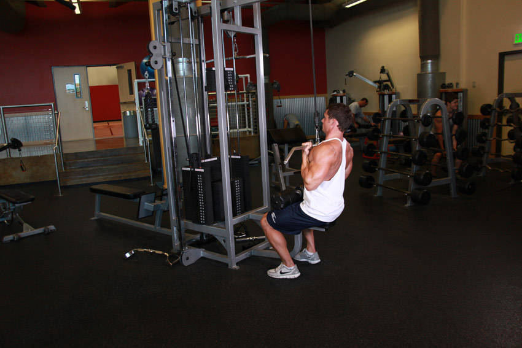

- Sit down on a pull-down machine with a wide bar attached to the top pulley. Adjust the knee pad of the machine to fit your height. These pads will prevent your body from being raised by the resistance attached to the bar.
- Grab the pull-down bar with the palms facing your torso (a supinated grip). Make sure that the hands are placed closer than the shoulder width.
- As you have both arms extended in front of you holding the bar at the chosen grip width, bring your torso back around 30 degrees or so while creating a curvature on your lower back and sticking your chest out. This is your starting position.
- As you breathe out, pull the bar down until it touches your upper chest by drawing the shoulders and the upper arms down and back. Tip: Concentrate on squeezing the back muscles once you reach the fully contracted position and keep the elbows close to your body. The upper torso should remain stationary as your bring the bar to you and only the arms should move. The forearms should do no other work other than hold the bar.
- After a second on the contracted position, while breathing in, slowly bring the bar back to the starting position when your arms are fully extended and the lats are fully stretched.
- Repeat this motion for the prescribed amount of repetitions.
This exercise appears in Programmd training programs. Take the quiz to find one for your gym.
Find your program